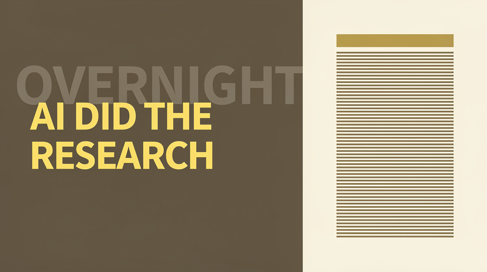
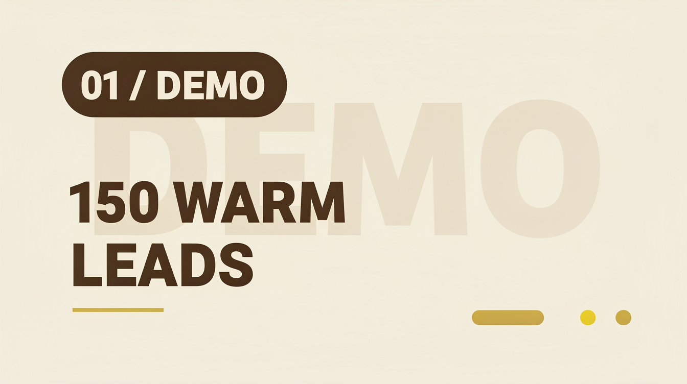
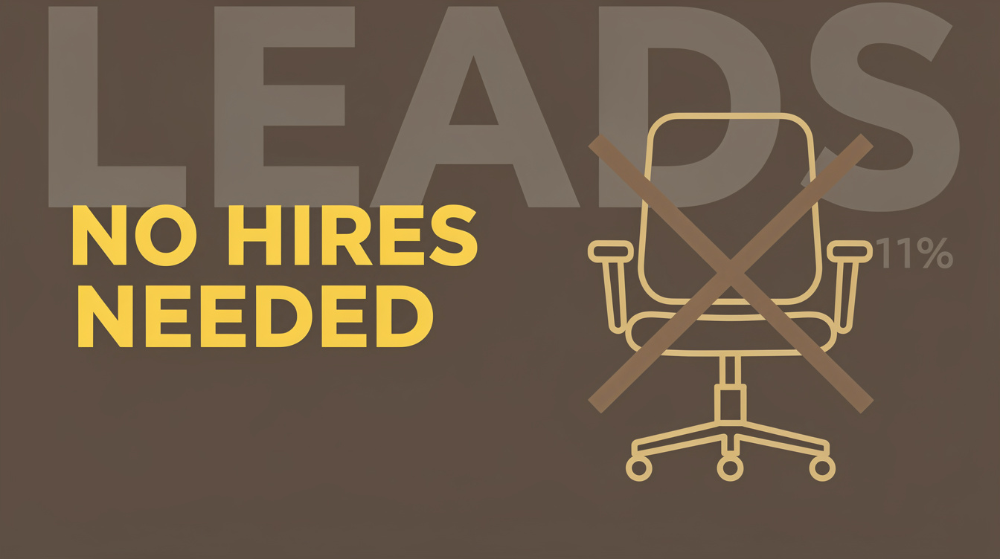
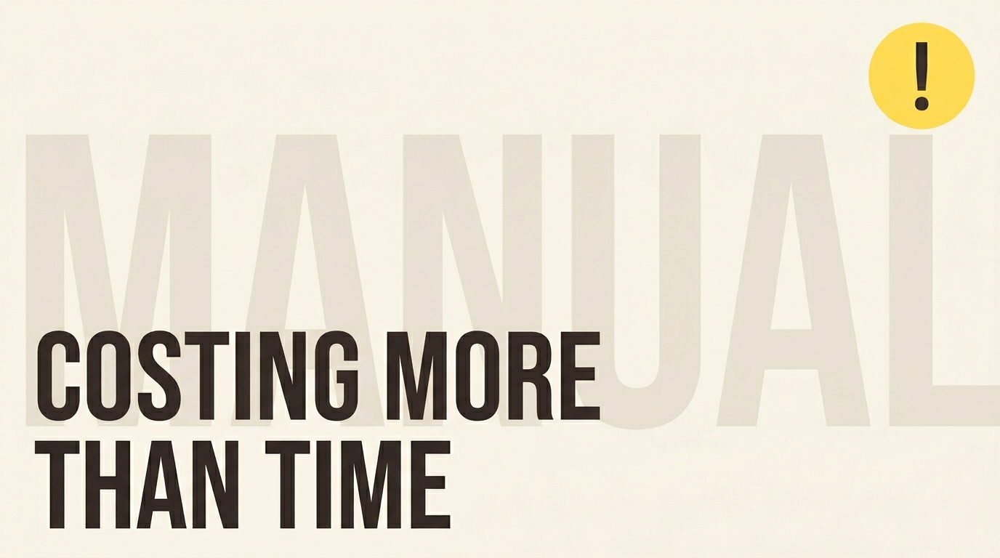
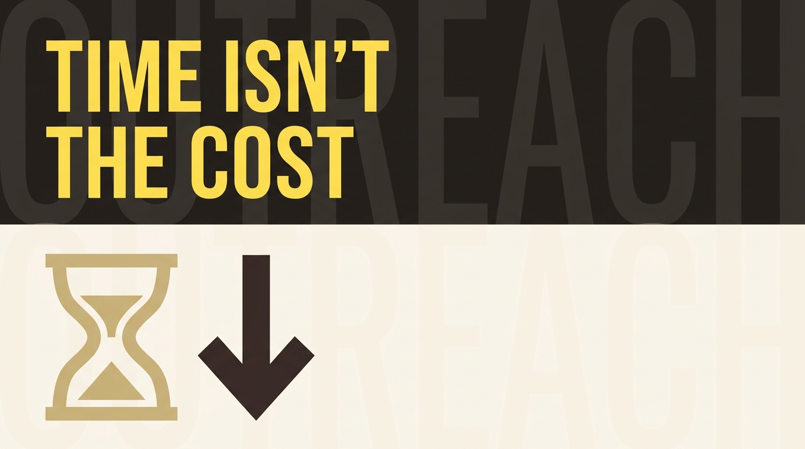
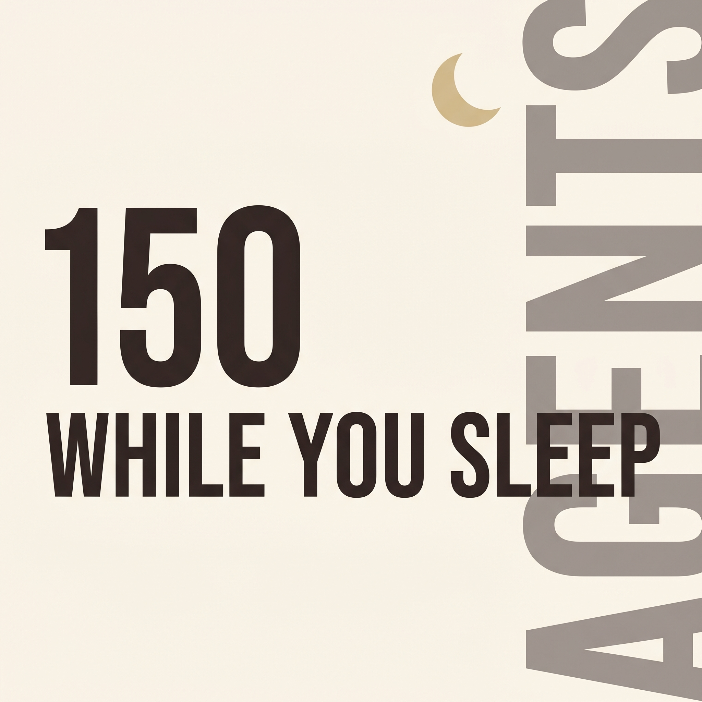
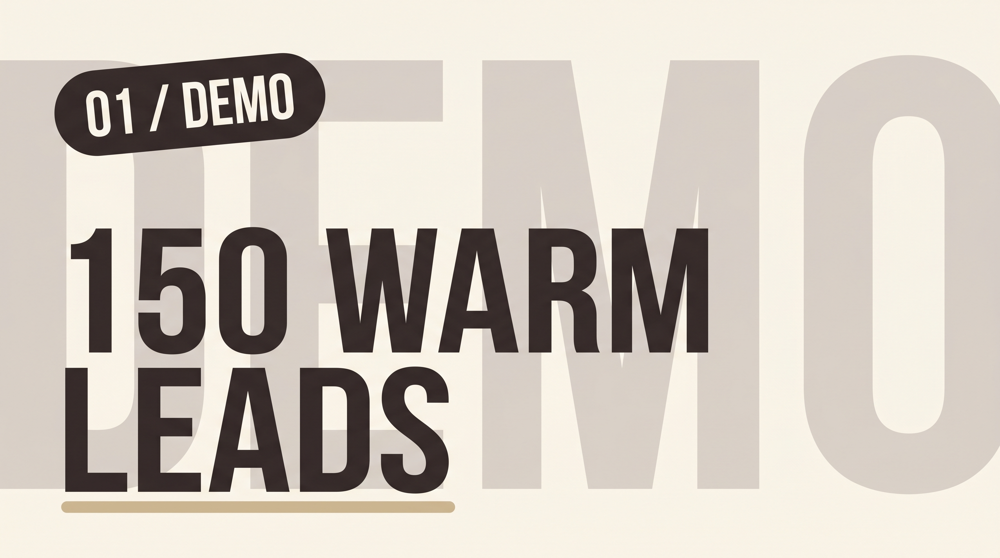
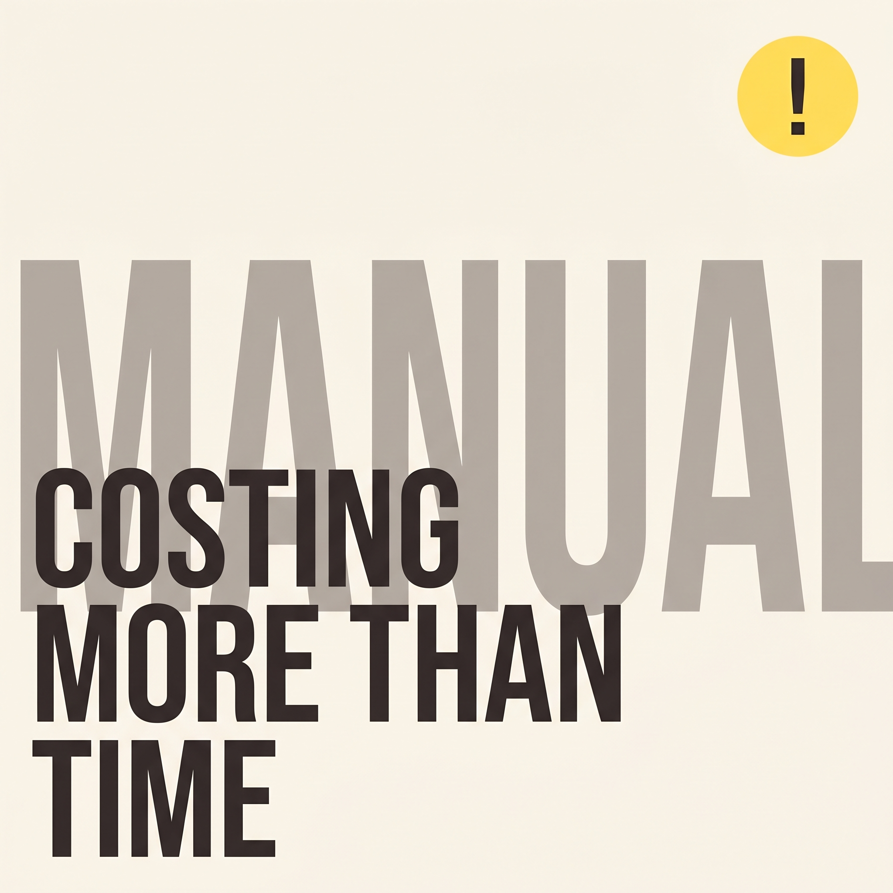

exp-1 — Can AI Research 150 Surgeons While You Sleep?
Create a 1280x720 YouTube thumbnail in the AppyDave brand system. Ground is a flat cream #faf5ec background occupying the entire frame. Behind everything sits a massive ghost watermark of the word 'AGENTS' in Oswald uppercase, brown #342d2d at 12% opacity, bleeding off the right edge so only the left two-thirds of the word is visible. In the foreground, the hook text reads exactly '150 WHILE YOU SLEEP' set in Bebas Neue uppercase, dark brown #342d2d, left-aligned, occupying about 55% of frame width across two lines ('150' large on top, 'WHILE YOU SLEEP' below). A small simple flat gold #ccba9d crescent moon icon sits in the upper-right corner as the single yellow-family accent. No humans, no photorealism, no halftone, no neon, no comic outlines. Palette strictly limited to brown #342d2d, gold #ccba9d, yellow #ffde59, cream #faf5ec. Typography-first composition, generous negative space.

exp-2 — Can AI Research 150 Surgeons While You Sleep?
Create a 1280x720 YouTube thumbnail in the AppyDave brand system. Vertical split-panel composition: the left 60% of the frame is dark brown #25201e, the right 40% is cream #faf5ec. Behind everything on the left panel, a ghost watermark of the word 'OVERNIGHT' in Bebas Neue uppercase, cream #faf5ec at 10% opacity, bleeds off the bottom edge. On the left panel, the hook text reads exactly 'AI DID THE RESEARCH' in Bebas Neue uppercase, bright yellow #ffde59, left-aligned, three lines stacked, occupying about 50% of frame width. On the right cream panel, render a stylised vertical stack of approximately 150 thin horizontal brown #342d2d lines suggesting a dense list of prospect dossiers, with a small gold #ccba9d header bar at the top. No humans, no photorealism, no halftone, no neon, no comic outlines. Palette strictly limited to brown #342d2d/#25201e, gold #ccba9d, yellow #ffde59, cream #faf5ec.

exp-3 — 150 Warm Leads Without Hiring Anyone (Demo)
Create a 1280x720 YouTube thumbnail in the AppyDave brand system. Ground is a flat cream #faf5ec background. Behind everything sits a massive ghost watermark of the word 'DEMO' in Bebas Neue uppercase, brown #342d2d at 13% opacity, bleeding off the left edge so only the right two-thirds is visible. In the upper-left, a brown #342d2d rounded pill badge sits at a slight tilt containing the text '01 / DEMO' in cream #faf5ec Bebas Neue uppercase. The main hook text reads exactly '150 WARM LEADS' in Bebas Neue uppercase, dark brown #342d2d, left-aligned, two lines, occupying about 55% of frame width and dominating the lower-centre of the frame. A small gold #ccba9d underline accent runs beneath the word 'LEADS'. No humans, no photorealism, no halftone, no neon, no comic outlines. Palette strictly limited to brown #342d2d, gold #ccba9d, yellow #ffde59, cream #faf5ec.

exp-4 — 150 Warm Leads Without Hiring Anyone (Demo)
Create a 1280x720 YouTube thumbnail in the AppyDave brand system. Ground is a flat dark brown #25201e background filling the entire frame. Behind everything, a ghost watermark of the word 'LEADS' in Oswald uppercase, cream #faf5ec at 11% opacity, bleeds off the top edge. On the right third of the frame, render a large flat geometric glyph of an empty office chair drawn in gold #ccba9d outline strokes, with a bold thick brown #342d2d 'X' crossing through it. The hook text reads exactly 'NO HIRES NEEDED' in Bebas Neue uppercase, bright yellow #ffde59, left-aligned across two lines, occupying about 50% of frame width in the left-centre of the frame. No humans, no photorealism, no halftone, no neon, no comic outlines. Palette strictly limited to brown #342d2d/#25201e, gold #ccba9d, yellow #ffde59, cream #faf5ec.

exp-5 — Manual Outreach Is Costing Coaches More Than Time
Create a 1280x720 YouTube thumbnail in the AppyDave brand system. Ground is a flat cream #faf5ec background. The composition is Ghost-Forward: an enormous ghost watermark of the word 'MANUAL' in Bebas Neue uppercase, brown #342d2d at 14% opacity, spans nearly the full width of the frame and bleeds off the right edge — this watermark visually dominates the design. In front of the watermark, the hook text reads exactly 'COSTING MORE THAN TIME' in Bebas Neue uppercase, solid dark brown #342d2d, left-aligned across three lines, occupying about 50% of frame width in the lower-left. In the upper-right corner sits one small filled yellow #ffde59 circle containing a brown #342d2d exclamation mark as the single accent element. No humans, no photorealism, no halftone, no neon, no comic outlines. Palette strictly limited to brown #342d2d, gold #ccba9d, yellow #ffde59, cream #faf5ec.

exp-6 — Manual Outreach Is Costing Coaches More Than Time
Create a 1280x720 YouTube thumbnail in the AppyDave brand system. Horizontal split-panel composition: the top half is dark brown #25201e, the bottom half is cream #faf5ec. Behind everything on the top panel sits a ghost watermark of the word 'OUTREACH' in Oswald uppercase, cream #faf5ec at 10% opacity, bleeding off the bottom edge of the upper panel and continuing faintly into the cream half. On the top dark-brown panel, the hook text reads exactly 'TIME ISN'T THE COST' in Bebas Neue uppercase, bright yellow #ffde59, left-aligned across two lines, occupying about 55% of frame width. On the bottom cream panel, render a flat geometric hourglass glyph in gold #ccba9d on the left side next to a bold brown #342d2d downward-pointing arrow. No humans, no photorealism, no halftone, no neon, no comic outlines. Palette strictly limited to brown #342d2d/#25201e, gold #ccba9d, yellow #ffde59, cream #faf5ec.

FINAL-1 — Can AI Research 150 Surgeons While You Sleep?
Create a 1280x720 YouTube thumbnail in the AppyDave brand system. Ground is a flat cream #faf5ec background occupying the entire frame. Behind everything sits a massive ghost watermark of the word 'AGENTS' in Oswald uppercase, brown #342d2d at 12% opacity, bleeding off the right edge so only the left two-thirds of the word is visible. In the foreground, the hook text reads exactly '150 WHILE YOU SLEEP' set in Bebas Neue uppercase, dark brown #342d2d, left-aligned, occupying about 55% of frame width across two lines ('150' large on top, 'WHILE YOU SLEEP' below). A small simple flat gold #ccba9d crescent moon icon sits in the upper-right corner as the single yellow-family accent. No humans, no photorealism, no halftone, no neon, no comic outlines. Palette strictly limited to brown #342d2d, gold #ccba9d, yellow #ffde59, cream #faf5ec. Typography-first composition, generous negative space.

FINAL-2 — 150 Warm Leads Without Hiring Anyone (Demo)
Create a 1280x720 YouTube thumbnail in the AppyDave brand system. Ground is a flat cream #faf5ec background. Behind everything sits a massive ghost watermark of the word 'DEMO' in Bebas Neue uppercase, brown #342d2d at 13% opacity, bleeding off the left edge so only the right two-thirds is visible. In the upper-left, a brown #342d2d rounded pill badge sits at a slight tilt containing the text '01 / DEMO' in cream #faf5ec Bebas Neue uppercase. The main hook text reads exactly '150 WARM LEADS' in Bebas Neue uppercase, dark brown #342d2d, left-aligned, two lines, occupying about 55% of frame width and dominating the lower-centre of the frame. A small gold #ccba9d underline accent runs beneath the word 'LEADS'. No humans, no photorealism, no halftone, no neon, no comic outlines. Palette strictly limited to brown #342d2d, gold #ccba9d, yellow #ffde59, cream #faf5ec.

FINAL-3 — Manual Outreach Is Costing Coaches More Than Time
Create a 1280x720 YouTube thumbnail in the AppyDave brand system. Ground is a flat cream #faf5ec background. The composition is Ghost-Forward: an enormous ghost watermark of the word 'MANUAL' in Bebas Neue uppercase, brown #342d2d at 14% opacity, spans nearly the full width of the frame and bleeds off the right edge — this watermark visually dominates the design. In front of the watermark, the hook text reads exactly 'COSTING MORE THAN TIME' in Bebas Neue uppercase, solid dark brown #342d2d, left-aligned across three lines, occupying about 50% of frame width in the lower-left. In the upper-right corner sits one small filled yellow #ffde59 circle containing a brown #342d2d exclamation mark as the single accent element. No humans, no photorealism, no halftone, no neon, no comic outlines. Palette strictly limited to brown #342d2d, gold #ccba9d, yellow #ffde59, cream #faf5ec.